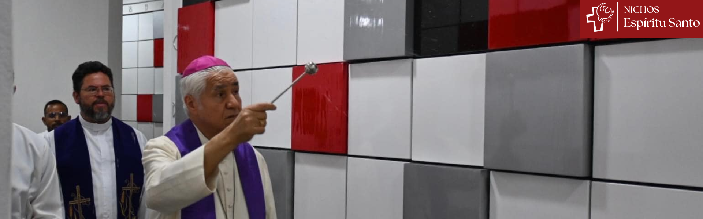
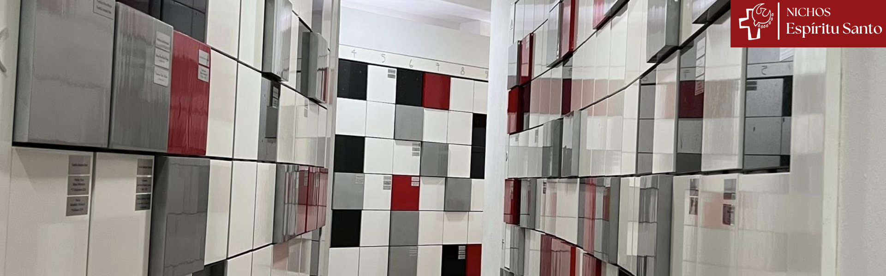
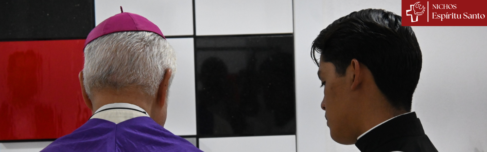

"Un lugar digno y cercano para conservar las cenizas de los fieles difuntos."




Ubicación
Estamos En el sótano del nuevo templo parroquial del Espíritu Santo
INFORMACIÓN IMPORTANTE
La Iglesia Católica sí autoriza que los cuerpos de los fieles difuntos sean cremados.
Sólo para cenizas humanas.
Todos los nichos ya están disponibles para su uso inmediato.
Si se ingresan urnas de mayor tamaño la capacidad disminuye.
USTED DEBE NOMBRAR DOS BENEFICIARIOS
Ellos tendrán la titularidad al faltar Usted...
ANUALIDAD: cerca de $100 pesos por año.
Para mayor información
Comuníquense con nosotros en nuestro WhatsApp o nuestro Facebook

WhatsApp:
8180827556

Facebook:
Nichos funerarios
Parroquia Espíritu Santo